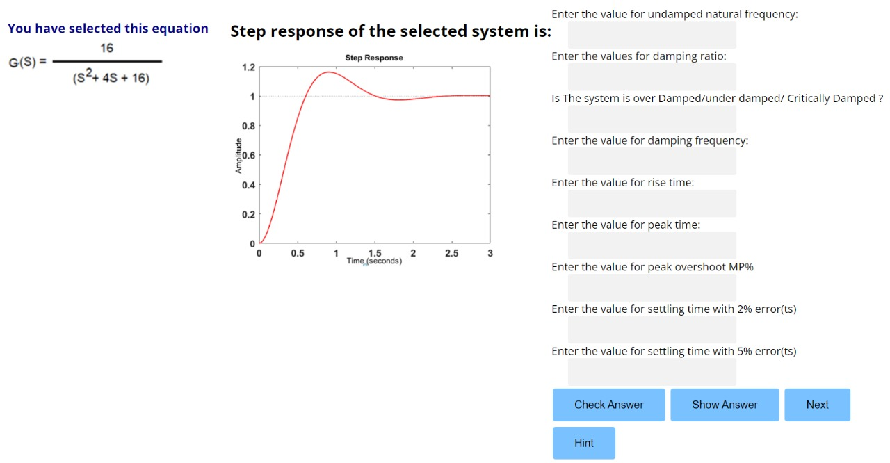
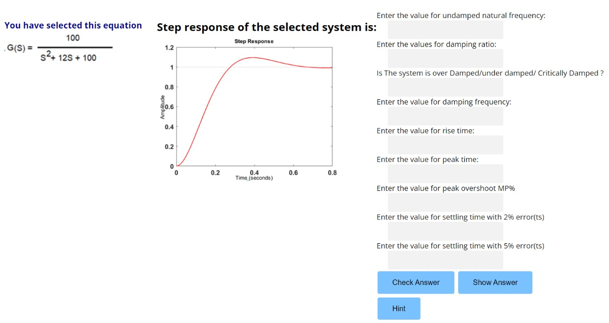

Control Engineering Lab
Determination of Time Domain Specifications
Procedure
- Firstly, select the transfer function of the system by clicking the given transfer function.
- The user would identify the un-damped natural frequency and calculate all the time domain specifcations such as damping ratio,damping ratio, rise time, peak time, peak overshoot and settling time using the formula and feed the answers in specific text box given. Then the user will press the check answer button to check its correctness. If the answer is correct, the simulation will display ‘Correct’ else the user can click the hint/help button to get the formula to be used for calculation.

- The user would identify the un-damped natural frequency and calculate all the time domain specifcations such as damping ratio,damping ratio, rise time, peak time, peak overshoot and settling time using the formula and feed the answers in specific text box given. Then the user will press the check answer button to check its correctness. If the answer is correct, the simulation will display ‘Correct’ else the user can click the hint/help button to get the formula to be used for calculation.
